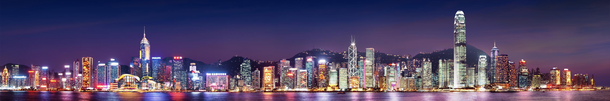
Hong Kong building picker
head up the coast
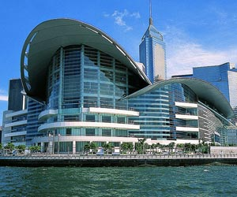
Hong Kong Convention
& Exhibition Centre
Built on reclaimed land on the Wan Chai waterfront, this is one of Hong Kong's major exhibition venues. The building underwent a significant extension in 1990s to include one of the world's largest curved roof structures and was chosen for the handover ceremony in 1997. 45 trade buyer fairs take place here each year, including the world's largest leather fair and clock & watch fair.
Image: Fabio Ingrosso / Some rights reserved
& Exhibition Centre
Built on reclaimed land on the Wan Chai waterfront, this is one of Hong Kong's major exhibition venues. The building underwent a significant extension in 1990s to include one of the world's largest curved roof structures and was chosen for the handover ceremony in 1997. 45 trade buyer fairs take place here each year, including the world's largest leather fair and clock & watch fair.
Image: Fabio Ingrosso / Some rights reserved
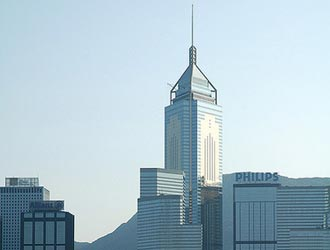
Central Plaza
Completed in 1992, Central Plaza was the tallest building in Asia until 1996 and remains the tallest reinforced concrete building in the world. Soaring 78 floars over Wan Chai, the bright neon rods on the top of the tower change colour every 15 minutes after dusk, and its triangular floor plan allows the vast majority of the offices to have harbour views. Visitors can enjoy the view from the 46th floor viewing gallery (free admission)
Image: Bernard Tey / Some rights reserved
Completed in 1992, Central Plaza was the tallest building in Asia until 1996 and remains the tallest reinforced concrete building in the world. Soaring 78 floars over Wan Chai, the bright neon rods on the top of the tower change colour every 15 minutes after dusk, and its triangular floor plan allows the vast majority of the offices to have harbour views. Visitors can enjoy the view from the 46th floor viewing gallery (free admission)
Image: Bernard Tey / Some rights reserved
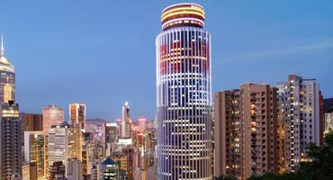
Hopewell Centre
The Hopewell Centre was the first circular skyscrape in Hong Kong upon completion in 1980. On the 62nd floor, restaurant Revolving 66 completes an hourly 360-degree rotation
The Hopewell Centre was the first circular skyscrape in Hong Kong upon completion in 1980. On the 62nd floor, restaurant Revolving 66 completes an hourly 360-degree rotation
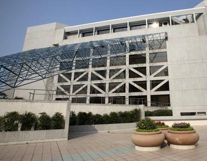
Hong Kong Academy for Performing Arts
One of the leading arts institutes in Asia, HKAPA's alumni include hundreds of Hong Kong TV and film stars, and the complex regularly hosts free dance and theatre performances
One of the leading arts institutes in Asia, HKAPA's alumni include hundreds of Hong Kong TV and film stars, and the complex regularly hosts free dance and theatre performances
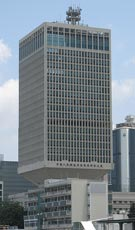
The Chinese People’s Liberation Army Forces Building
Built as the British Army's HQ in 1979 the CPLA building was built on a narrow stem to dissuade attackers from scaling its front
Image: Ian Muttoo
Built as the British Army's HQ in 1979 the CPLA building was built on a narrow stem to dissuade attackers from scaling its front
Image: Ian Muttoo
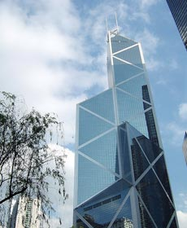
Bank of China Tower
The first building outside the USA to break the 100ft mark upon completion in 1990, the Bank of China Tower was designed to resemble growing bamboo shoots. Critics attacked its negative feng shui from the outset of the project, noting its resemblance to a meat cleaver aimed at the nearby HSBC building
Image: Toby Oxborrow
The first building outside the USA to break the 100ft mark upon completion in 1990, the Bank of China Tower was designed to resemble growing bamboo shoots. Critics attacked its negative feng shui from the outset of the project, noting its resemblance to a meat cleaver aimed at the nearby HSBC building
Image: Toby Oxborrow
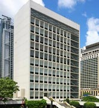
City Hall
Completed in 1962, City Hall's Bauhaus design sparked a significant deviation from predominant Victorian design concepts in Hong Kong in the 60s
Completed in 1962, City Hall's Bauhaus design sparked a significant deviation from predominant Victorian design concepts in Hong Kong in the 60s
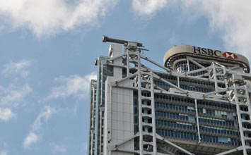
HSBC Main Building
The bank's fourth consecutive HQ on Queen's Road, designed by Norman Foster
Image: Tom Mascardo
The bank's fourth consecutive HQ on Queen's Road, designed by Norman Foster
Image: Tom Mascardo
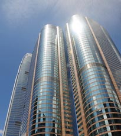
Exchange Square
Home to the Hong Kong Stock Exchange, Credit Suisse and various diplomatic consulates, the Exchange Building's facade features alternating Italian granite and silver reflective glass
Image: Roger Price
Home to the Hong Kong Stock Exchange, Credit Suisse and various diplomatic consulates, the Exchange Building's facade features alternating Italian granite and silver reflective glass
Image: Roger Price
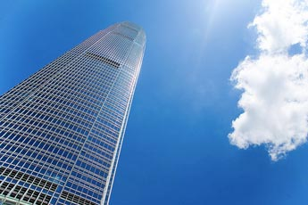
Two International Finance Centre
Soaring 420m over Hong Kong with 88 storeys, this is the second tallest building in the city behind the International Commerce Centre in Kowloon. In 2003 it hosted the world's largest advert (by the FT, Cathay Pacific & HSBC)
Image: Chi King
Soaring 420m over Hong Kong with 88 storeys, this is the second tallest building in the city behind the International Commerce Centre in Kowloon. In 2003 it hosted the world's largest advert (by the FT, Cathay Pacific & HSBC)
Image: Chi King
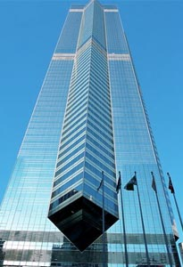
The Center
Completed in 1998, The Centrer is best known for its impressive computer-controlled lighting system that displays over a million combinations of colours and patterns at the top of the building
Completed in 1998, The Centrer is best known for its impressive computer-controlled lighting system that displays over a million combinations of colours and patterns at the top of the building